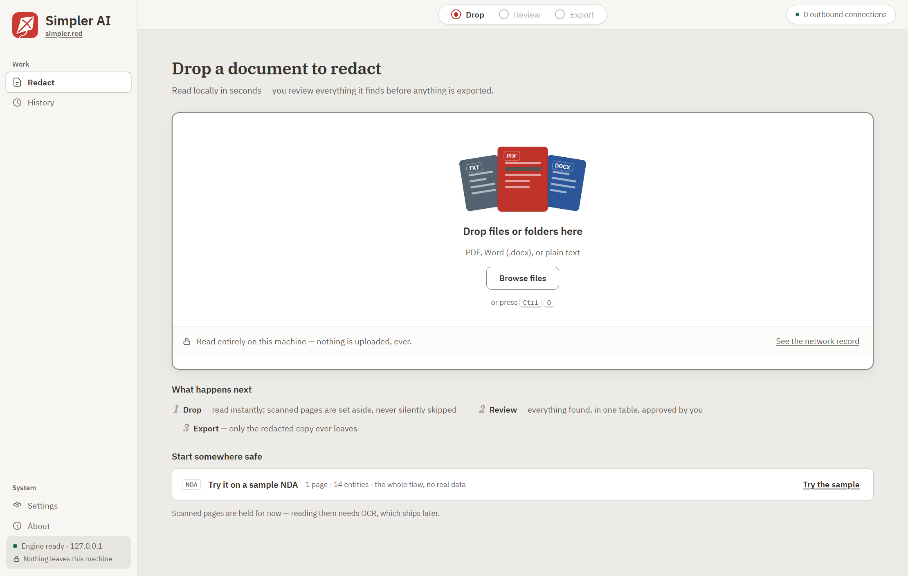
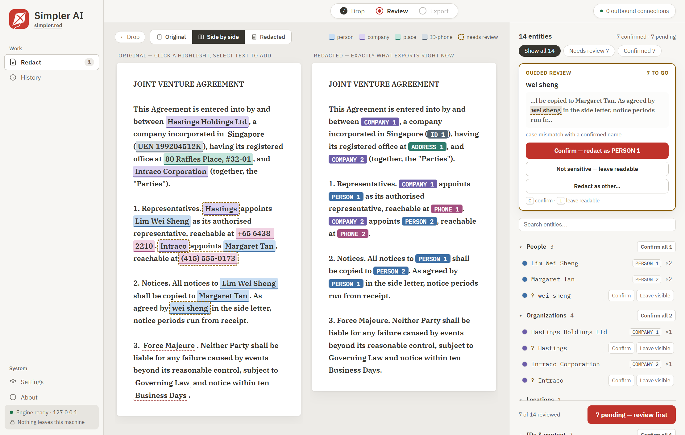
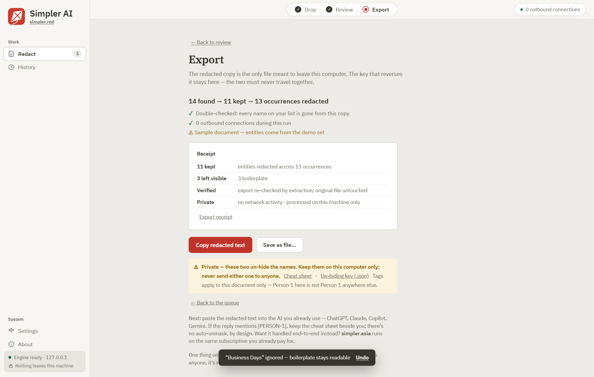

A local model and deterministic rails find people's names and identifying numbers in legal documents, on hardware you own — 46 unseen SEC-filed business agreements, zero identity leaks, measured across four consecutive fresh draws; 45 of those documents ran the engine as it stood before it was frozen, and one ran the frozen engine. The draw before them, round 4, the first under the current gold and scorer, leaked 3 identity spans in 1 of its 15 documents and is published as drawn. Court judgments and a firm's own filings are harder, and the evidence below says by how much. Nothing exports until you finish the review, and finishing is your sign-off that you have read the document and its marks.
Free · Apache-2.0 · no account, no server of ours, no telemetry · v0.1.0 for Windows, not code-signed

Screenshots on this page are of the sibling app simpler-red, not of Simpler Legal. They are retaken before launch.
The core claim, live
Ink drawn over text leaves the text in the file, one copy-paste away. Both documents below are real text on this page. The right-hand one is an illustration written in the export's tag format, not a recorded engine run.
It works on the left document. It has nothing to work on in the right one.
Simpler Legal never draws boxes over your document. Everything it redacts is
deleted from the text and substituted with a placeholder, and a text export is a new file
rebuilt from the cleaned text. A .docx export is not: it rewrites your original Word package,
so its safety rests on a check rather than on impossibility — the finished file is walked
again, and if the check finds a name the engine found or a term from your always-redact
list still in it, the export is held back. The check has blind spots, listed in the questions below. A name the engine never
found, in the body or in the headers, footers and notes it reads apart from the body, is in
no table, so the check cannot catch it unless the name is on your always-redact list. A name run into a
plain word of letters where nothing marks both its ends is a second:
kestrelholdings where the list says Kestrel, or tanholdings where
the table says Tan, is not masked in the text export or in the .docx, and the check passes.
So is a name typed with its letters spaced apart. Word's hidden places are a third: a
name split between separate parts of an equation, such as a fraction's top and bottom,
ships, and the check passes. Tags follow spellings, not people: a different form of the same person's name, such
as a surname alone or a possessive, can get a tag of its own, so the AI you hand the
document to may read one person as two. The reverse happens too. Some names are replaced
by a bare, unnumbered [Person] that does not tell people apart: on the
benchmark's 25 court judgments, one [Person] stood for two or more
differently spelled names in 15 (in none of its 46 agreements). And one spelling can carry
two tags: in 9 of those 71 documents a name was tagged as a company in one place and a
person in another, or as two different people. A table row can also reach into a different,
longer name: with Donald in the table, McDonald becomes Mc[Person1], and the
two read as one. Across separate documents of one matter the
tags are not coordinated either: the same person can carry a different tag in each file.
The map from tags back to names is a
separate file that never exports with the document unless you explicitly say so.
Why local isn't a feature toggle
"AI" has meant "send it to a data center" for so long that local sounds like a setting. It isn't — it's the direction of travel reversed. Your documents don't go to the AI. The AI comes to you.
It's the same architecture the AI labs run — a model behind a server — except the server is your laptop and it listens only on 127.0.0.1. That's why there is no per-page pricing, no monthly allowance, no metering: nobody's hardware is doing you a favor. Length still has a practical limit: in pre-launch testing, documents of about 60,000 words ran for about 14 minutes and returned nothing, twice, and nothing yet records why. The model itself is Google's Gemma 4 E2B, not fine-tuned or altered by us; the repository records it as Google's stock quantized weights. What the launcher checks is narrower than where the file came from: when the app starts the model server, it hashes the file against the SHA-256 pinned in this repository and refuses one that does not match. That proves you are running the file the benchmark record pins. The pin is also the SHA-256 that Hugging Face lists for that file at one revision of Google's own repository there, the address the app and this page give for the download (checked 2026-09-25), so a file that passes is the file published at that revision.
The corridor
One corridor, no suite, no workflow product. It does one job.
A contract, a letter, an intake form. It never uploads — there is nowhere to upload to.
A wide sweep finds identities; code removes every copy document-wide; a second pass re-reads the result hunting anything left behind.
Everything found, in one table, with keyboard shortcuts. The frozen engine marks nothing as uncertain, so its table opens with no row flagged and the reading is yours. If the lighter in-app engine runs instead, the rows it is unsure of are flagged and walked one at a time. Nothing exports until you finish.
The redacted copy — plus, separately and only if you ask, the key that maps tags back to names.
The app
If a run is incomplete, or a masked name is still found in the export, the export is held. The last check is yours: nothing exports until you finish the review, and finishing is your sign-off, not the machine's.

Review. Original and redacted side by side, every finding highlighted in place. The count under the table keeps apart what you decided and what stands as the machine marked it, and the receipt carries the same split. Rows an engine flags as uncertain are walked one at a time and hold the finish button until you decide them; the frozen engine flags none. If you change a finished document so that something masked at finish becomes readable, the finish comes off.

Export. The honest funnel, verify-by-extraction plus a partial-name check, a receipt for your records — then copy the redacted text straight into the AI you use, or save it as a file. The original is never touched.
Measured, published, reproducible
Every accuracy number in this industry is a sentence you're asked to believe. Ours come with the files behind them: the draw manifests, the gold labels, the scorer and every round's board are committed in the repository, and the exhibits below link to them. The full methodology, per-class results and leak ledger have their own page.
EXHIBIT A
Over 260 real public documents — Singapore High Court and Family Court judgments, US federal opinions, UK judgments, SEC agreements — blind-labeled by AI agents we ran ourselves before the engine ever saw them, sealed by commit: each walk-forward round (4 to 7) by a swarm of 80 Opus agents, the UK probe by 20 Opus agents, and the 100-document development set by two Sonnet labellers plus an adjudicator per document. The instrument itself is measured: 8 agents re-judged 240 gold calls sampled from the development set, blind — whether a quasi-identifier should be masked or kept; identity (DIRECT) labels were not sampled — and agreed with the sealed gold on 213, or 88.8%. That is less than it sounds: 203 of the 240 calls were “keep”, so answering “keep” every time would have agreed on 84.6%. It is an agreement rate on mask-or-keep calls, not a ceiling on quasi-identifier recall, and we publish it instead of claiming quasi-identifier scores above it. It measures the Sonnet-labelled development gold, on 2026-07-23, before later revisions of the gold's doctrine, and has not been re-measured since; for the round boards, scored against Opus-labelled gold, it is an indicator, not their measured limit.
pii-bench/ in the repoEXHIBIT B
Fixes prove themselves on paper they have never seen: every round draws fresh documents by a fixed rule written into its draw script and committed with the draw, and the board publishes as drawn — including the misses, each named by class with its diagnosis. The rule was not registered in advance in any meaningful sense: for rounds 6 and 7 it was committed in the round's write-up about a minute before the draw, and for round 4, round 5 and the post-freeze probe it first appears with the draw. This site does not reprint the identifiers; the round write-ups in the repository, and some engine source comments, still name some of them.
the full measurement recordEXHIBIT C
The engine is frozen with its claims table, each claim beside the record it cites. It unfreezes only if an identity leaks in the frozen configuration on real paper, or the maintainer orders it. The firm-filings run below found identifiers readable under the frozen configuration; it was checked against one AI agent's list, with no sealed gold, and was not treated as a receipt against the freeze. The post-freeze receipt: one agreement drawn and run after the freeze, through the live engine adapter, with zero identity leaks. It was filed on 2026-01-21, months before the freeze; what makes it unseen is that it was in no earlier draw. Where the claims table and this page differ, this page's wording is the checked one. The differences include the 88.8% (240 sampled calls re-judged, not a relabel; answering “keep” every time would have agreed on 84.6%), the utility judge (the table says blind; its prompt says which answer came from the redacted copy), "pre-registered" draw rules (see Exhibit B), the UK probe (run on the configuration from before the round-6 and round-7 fixes, not the frozen one), and an adversarial review panel that left no committed output.
FREEZE.md — the freeze and its claims table| Measurement | Corpus | Result |
|---|---|---|
| SEC-filed business agreements — four consecutive fresh draws, first contact each time | 46 unseen EDGAR agreements, 2001–2026 filings, each draw by a fixed rule committed with it — rounds 5, 6 and 7 plus the post-freeze probe below. 43 of the 46 contain an identity to leak; 3 contain none | Zero identity leaks — gate 100%. The draw before them, round 4, leaked 3 in 1 of its 15 documents; that board is published as drawn |
| Court judgments — the hard genre, latest fresh round, published as drawn | 25 unseen SG + US judgments | 97.7% identity recall · 21/25 leak-free |
| Jurisdiction transfer — the courts configuration as it stood before the round-6 and round-7 fixes, not changed for the UK | 10 UK judgments it was never tuned for. The frozen configuration has not been run on them | 100.0% identity recall — gate 100% |
| The other direction — what a frontier AI still extracts from the redacted copy | 25 round-4 documents, masked by the engine as it stood then, before the freeze · 125 questions answered separately from the original and from the masked copy, scored by a model judge told which answer came from which | 0.968 substance-equivalence |
| The post-freeze probe — a document drawn and run after the engine was frozen | 1 agreement, filed 2026-01-21 and in no earlier draw; draw rule committed with the draw | Zero identity leaks — 3 identity spans in its gold, 0 readable |
| The gold's own agreement — 240 development-set gold calls re-judged blind | quasi-identifier mask-or-keep calls only, from the Sonnet-labelled development set; identity (DIRECT) labels not sampled | 88.8% agreement (213/240), against 84.6% for answering “keep” on every call (203 of the 240 were “keep”) — on that gold, quasi-identifier and preservation scores above it cannot be told apart from label disagreement. Measured 2026-07-23, before later doctrine revisions; not re-measured since, and not measured on the Opus-labelled round gold, for which it is an indicator only |
| Court filings in a firm's own shapes — briefs, complaints, letters, a settlement, declarations | 20 public filings (CourtListener RECAP), 296 identifiers listed by one AI agent reading each original — no second labeller, no sealed gold and no round board; the documents and that list are not in the repository | Default setting: an identifier still readable in 14 of 20 (27 of 296 — mostly party companies, law-firm names, docket numbers and fee amounts). With the “Our own matter files” setting: 8 of 20 (11 of 296). No email or phone number survived under either |
Measured 2026-07-19 → 2026-07-24, each row from a committed board, except the firm-filings row (2026-09-15), whose record is a ledger entry. Rounds 5–7 each ran the engine as it stood that day; only the post-freeze probe ran the frozen engine. Every number here is for the full pack pipeline with its local model, the one the app reaches through its local adapter. When the adapter is absent, is refused, or fails on a document (including a run the app stopped) but the model is running, the app says so and runs a lighter in-app engine instead, and no number on this page was measured on that path. When the model itself is unavailable, no engine runs: the app marks the document “Read, not redacted”, masks only your always-redact list and the safety-net patterns for structured identifiers such as phone numbers and emails, and leaves the rest to you. Both kinds of rows are published — the converged genre (zero identity leaks, four consecutive draws running, after round 4 leaked) and the honest one (courts, where every fresh draw still finds something new, each named in the open and either fixed or left on the published open shelf). A vendor that shows you only one number is showing you the wrong one. Want the methodology, round-by-round boards and every named miss? The measurement record.
The corpus manifests, the sealed gold (as character offsets, not text), the scorer and every board ship in the tree. The source documents themselves don't — they re-fetch from the public sources they came from, and each manifest pins every document by URL and a hash of its text. The draw scripts re-run the search rather than replay that list, and they rewrite the manifest as they go. The business-agreement draws query SEC full-text search live, so a later rebuild may not return the same documents; put the pinned manifests back and the hash check tells you whether yours are the ones the boards measured. There is no replay-from-manifest command yet. The courts numbers do not fully rebuild: the gold for the Singapore Family Court judgments is withheld, because it indexes where that court's own anonymisation missed, and the scorer says so and scores the rest (WITHHELD.md). Re-running the engine needs the local model and a llama.cpp build (see Download). The scorer proves itself before it proves anything else. The hash check and the hydrate step both walk every set, not only the one you rebuilt: with one round rebuilt they print MISS for every document of the others and exit 3. Read the DRIFT and MISS lines for your round — no DRIFT and no MISS there means your documents are the ones measured.
git clone https://github.com/Simpler-Systems/simpler-legal cd simpler-legal node score-pii.mjs selftest # the scorer proves itself first: 8/8 node build-round7.mjs # re-draw a round from public sources (rewrites its manifest) git checkout pii-bench/ # put the pinned manifests back node backfill-manifest-sha.mjs --check # checks every set: MISS for sets you did not rebuild, DRIFT if yours differ node gold-offsets.mjs hydrate # rebuild the gold's span text; also reports sets you did not rebuild node serve-legal.mjs # the frozen engine behind one local endpoint (needs the model)
Get it
Desktop app for Windows. Reads PDF, Word and plain text;
a text export is a new file rebuilt from scratch, and a .docx export rewrites your original
Word package and is held back if a check of the finished file finds a name from the review
table or your always-redact list still in it (what that check cannot see). The model (3.35 GB) is not in the installer, and the app does not download it:
you download gemma-4-E2B_q4_0-it.gguf yourself, from
Google's Hugging Face repository, at the revision the app is pinned to
(Apache-2.0; the app's Setup screen shows the same address), and put it where the app
looks (below). The file of the same name on that repository's main branch is a later
upload with a different SHA-256, which the app refuses. The file you need is exactly
3,349,514,112 bytes with SHA-256 3646b4c1…455e6fd. When the app starts the
model server, the launcher hash-checks the file against that pin and refuses one
that does not match.
Every release is on GitHub Releases. To build the installer yourself, follow BUILDING.md.
There is no file picker yet.
The app looks for gemma-4-E2B_q4_0-it.gguf in a fixed, short list of folders
and uses the copy in place: the shared %APPDATA%\Simpler AI\models folder
(the place to put a new download; it is in the roaming profile, so on a network that
copies roaming profiles to a server, use %LOCALAPPDATA%\simpler-legal\models
instead), your Downloads folder, ~\models, and the
model folders of LM Studio, Hugging Face, GPT4All, Jan and Ollama, plus a
models folder under %APPDATA% or %LOCALAPPDATA%
named for any Simpler app (simpler-legal, simpler-red and four
others). It never searches the whole disk. For a copy anywhere else, either move it into one
of those folders or name its folder in the SIMPLER_MODEL_PATH environment
variable, which the app searches first. SIMPLER_MODEL_GGUF names the file
itself; the app hash-checks it before starting the model with it. Settings shows
which file it found and can hash-check it on demand; the hash decides, not the filename.
By the app's code, it makes no network
connection off the machine: every call it makes is to 127.0.0.1 (see
Audit us). Its installer may fetch Microsoft's WebView2 runtime (see
the offline-bundle card above). No packet
capture of the packaged app, its installer or the WebView2 runtime it renders in is on
record yet. On a shared Windows host, loopback ports belong to the machine, not to one
user, so the app checks who is on its two ports before it sends a document. The engine
service on 1436 must prove, on the connection that will carry the document, that it holds
a secret token: the one the app gave it, or, for a service you started by hand, the one
that service wrote to your local profile. Anything else on that port is sent nothing. On 49400 the
app asks Windows which account owns the model server: another account's, or one the app
may not inspect, is refused, and one of yours that the app did not start is used only
after its model file matches the pinned hash. The engine reaches the model only through a
relay inside the app, which writes nothing on a connection until Windows names the far
end as the process it checked, and stops the run if that process changes or exits. The
engine service also refuses requests addressed to any host but this machine, and requests
from web pages other than the app's own development server. The model server has no such
checks: it is llama.cpp's own, which by default publishes the last text it was given at
/slots and takes requests from any web page. The app starts it with
/slots switched off and with a key made at each launch that only the app
and the processes it starts for the model hold, two settings not yet tested against a running server. If a model server the app
uses still answers at /slots, or the app's own answers without the key, the
app says so on screen. A model server you start by hand with the launcher below has
neither setting. The app also starts everything with proxy settings removed. None of this
protects against a program running under your own account. The
IT brief has the detail, and
PRIVACY.md says
what the app sends and what it keeps on disk. Report a security problem privately, through
the repository's Security tab,
as SECURITY.md
says; not in a public issue, and never with a client's document attached.
Version 0.1.0 is not code-signed, so Windows SmartScreen will warn: a blue "Windows protected your PC" screen. Click More info → Run anyway. The warning is accurate: there is no publisher for Windows to recognise. The way to know what you are running is to read the source and build it yourself (BUILDING.md).
The engine already runs from source, and
there is no package to install — the engine scripts are plain Node (20 or later) with no
dependencies. You supply two things the repository does not carry: the model file (3.35 GB,
in one of the folders above) and a llama.cpp build, on your PATH or named in
SIMPLER_LLAMA_BIN. Then git clone, tools/launch-server.sh
(tools\launch-server.cmd on Windows) to serve the pinned local model — it
hash-checks the file first and refuses one that does not match, unless you name the file in
SIMPLER_MODEL_GGUF, which skips the check — and
node serve-legal.mjs to put the frozen engine on 127.0.0.1:1436 —
POST /strip returns the redacted text and the entity table, and needs the
token that launch writes to
%LOCALAPPDATA%\Simpler AI\run\legal-service-1436.token, sent as
Authorization: Bearer. The launcher does not switch off the model server's
/slots endpoint and gives it no key, so any web page open while it runs can
send it text and read the last text it was given (see the note above); set
LLAMA_ARG_ENDPOINT_SLOTS=0 in that shell before running it, which is the switch
the app sets for a server it starts and has not yet been tested against a running server.
serve-legal.mjs refuses to start, and says which setting to remove, when
Node's own proxy switch and an HTTP_PROXY setting, with 127.0.0.1 not in
NO_PROXY, would send its model calls through a proxy. Every published board
was produced on Windows; the POSIX launcher passes the same flags but has no board of its
own. The model weights are Google's, under Apache-2.0
(THIRD_PARTY_NOTICES.md).
Audit us
The privacy claim is testable. The first check takes five minutes and no expertise at all.
Turn off Wi-Fi, redact a document. By the code, everything should keep working, because every call the app makes is to this machine. No recorded run of this test is on file yet.
Run a network monitor (Wireshark, or Windows' own Resource Monitor or pktmon) during a redaction. By the code, you should see no connection off this machine, only loopback traffic to 127.0.0.1 — the app talking to its own model server on port 49400, its engine on port 1436, and its relay between the two on a port that changes at each launch. No capture of this is on record yet.
It's Apache-2.0 source, on GitHub. Grep the app and engine for a network call: every one goes to
127.0.0.1 — ports 49400 (the model) and 1436 (the engine), both bound to loopback, and the
app's relay between them. The app's Rust side has no HTTP client library: it writes its
requests itself, sends document text only on a connection it has checked first, and it starts every process
with the proxy settings removed, so a system HTTP_PROXY cannot route a
document through a proxy. There is no updater and no telemetry. The other
http:// strings in the app's source code (app/frontend/src,
app/src-tauri/src) name four hosts, schemas.openxmlformats.org,
schemas.microsoft.com, purl.org and www.w3.org: they are the addresses of the XML
namespaces Word and Office files use, which the .docx writer and its check recognise, and
examples of such addresses in the text of the .docx receipt. None of them is requested.
Outside comments, the app's source code in those two folders holds one
https:// address: Google's address for the model file, which the Setup and
Settings screens show as text for you to copy. The app
never requests it.
The egress pill in the corner reads "0 requests off this machine" and opens that window's live network record — what the app itself requested, and what the browser loaded for the page. It says what it cannot see, too.
Questions
The redaction itself stays in your custody: this is local software, your originals never reach us or anyone else, and there is no server of ours that could receive them. But the product exists to make a copy you then send to an AI provider, and your confidentiality and privilege analysis applies to that copy. It still carries the matter's facts, dates, amounts and most places, by default the names of companies that are not the document's own identity, and anything the engine missed — on a firm's own filings, an identifier was still readable in 14 of 20 under the default setting (see the evidence above). Review it before you send it, and weigh the provider's terms as you would for any disclosure. Not legal advice; apply your own professional judgment, as you would anyway.
PDF, Word (.docx) and plain text. Scanned or image-only pages need OCR, which isn't included yet — we'd rather tell you that plainly than silently guess at a page. A PDF with no readable page is held; a scanned page inside an otherwise readable PDF is left out, and the copy carries a line in its place ([page 7 is not included: this app could not read it]). A saved email, or a file whose text carries an email's headers or encoded content such as a base64 attachment, is held before the engine reads it, because the app cannot read what is encoded and so cannot mask it; the hold says how to get through (save the message body as text or PDF, and each attachment as its own file). In a PDF, only the page that carries such a block is left out, marked the same way, and the other pages are read. Not every encoding is caught: ASCII85, for one, goes through unread, and so does a base64 run short enough, or shaped enough like a column of ids, to pass for one. A file is held when a run of characters written as % and two hexadecimal digits spells two or more plain Latin letters or digits, or, outside a web link or a file path, two or more letters of another script such as Chinese; an escaped space or punctuation mark, an escaped accented letter, and escaped letters of another script inside a link or a path go through on one line, except in a file name with a bare comma or semicolon in it, which is held, and a name written that way is masked in both exports, the escapes with it (see below); printed across rows, such a link can still be held. A text export is a new file rebuilt from the redacted text — never your original with boxes drawn on it. A .docx export is different: it rewrites your original Word package, and its safety rests on a check rather than on impossibility. The finished file is read again: every part and the part's name, its text, every attribute value, the names of its elements and attributes (in the parts Word writes, not a name under one of Office's own namespaces), and the namespaces it declares or lists. It is held back if the check finds a name from the review table or a term from your always-redact list still in it, with its words apart or run together, or something the safety-net pattern masks. The check has blind spots, stated plainly here. The receipt states what the check reads and what it does not, and names the blind spots below that concern the check itself: a name split between the parts of an equation; a name with its letters spaced apart or each in brackets, with a hyphen, a line break or an invisible direction or format mark inside one of its words, broken across the lines of a quoted reply, or with a letter written as a symbol in the Symbol font; a name run into a plain word of letters; a name under six letters inside an address or in a value in the file's code; a row masked inside a longer name; a row of digits alone under six digits inside a longer number or value, or grouped other than by the marks it lists; a character reference without its semicolon (other than   and one by number), one HTML does not define, or one escaped again; a name under one of Office's own namespaces; and a number under one of Office's own prefixes or in a drawing's position, size or share of the page. First, the engine reads the main body, and then, in a request of its own, the text the saved .docx carries outside it: headers (with any watermark), footers, footnotes, endnotes, chart and SmartArt text. A name it finds only there is masked wherever the saved .docx carries it, and the Review screen lists it; the copied text and the .txt are the body alone. If the body was read and that text was not, or its read could not be used, the .docx is held and says why. A name the engine did not find anywhere, and that is not on your always-redact list, is not masked anywhere in the file, and the check passes. Second, a name or listed term run together with other words (KestrelCapital or kestrelcapital.com where the list says Kestrel, MargaretTan where the table says Margaret Tan) is masked in the text a reader sees, in the text export too, and holds the export wherever else the check finds it. In the text a reader sees, a name is found inside a longer word only where a break marks both its ends — a space or punctuation mark, letters meeting digits, a capital after a small letter — or before a plural ending when it is written with its capital (the Smiths where the table says Smith), or, from six letters and digits, inside a web or e-mail address, a path, a handle, a tag or a word with a digit in it (www.kestrelcorp.com, @kestrelholdings or #kestrelholdings where the list says Kestrel). Run into a plain word of letters where nothing marks both its ends, a name of any length ships, in the text export as well, and the check passes (kestrelholdings where the list says Kestrel, margarettanfile where the table says Margaret Tan, tanholdings or Tanholdings where it says Tan, LIWUCORP where it says Li Wu), and so does a name under six letters inside an address (tanholdings.com). A row of digits alone, such as an account or matter number you add to the table, is found from six digits wherever they stand together, inside a longer number or a reference too (an IBAN that ends in it), and in the text a reader sees also across one mark that groups them: a space of any kind or a tab, a full stop, a middle dot or the bullet (•), a slash, a hyphen, a dash or the minus sign, a hyphen with a plain space either side (3192 - 6819), or a round closing bracket and one plain space after the first group, as (3192) 6819 is written; grouped any other way — with a comma (3192,6819), an underscore, a colon, two spaces, a line break, an en or em dash or a slash with a space either side (3192 – 6819, as a range is written), a square bracket ([3192] 6819), a no-break space beside a bracket or a hyphen, or a mark that only looks like one of those (a fraction slash, an ideographic or small full stop, a swung dash, a heavy minus sign, a white, black or triangular bullet: 3192⁄6819, 3192。6819, 3192◦6819) — it ships from both exports, and the check passes. A row of fewer than six digits, such as a five-digit matter number, is masked where it stands alone in the text, and holds the export where it is the whole of a value in the file's code that the check reads (in an add-in's attribute, in a part this app does not know, or between the tags of an element under one of Office's own namespaces); it is not looked for inside a longer number or value (9944179, or Matter 44179 as one value, where the table says 44179), in an attribute under one of Office's own prefixes (w:tel) or with no prefix on a drawn shape, or in a drawing's position, size or share of the page: there it ships, and the check passes. A name written with percent-escapes, as a web link writes a space (Margaret%20Tan), an apostrophe, an accented letter (M%C3%BCller for Müller) or a Chinese name, or with a character reference typed out, with its semicolon or, for   and a reference by number, without it (Margaret Tan, Margaret Tan, Margaret Tan), is read as the characters it writes: it is masked in both exports, the escapes with it, and holds the export in the file's code. An escape that writes no character where a name could stand (Ren%E9%20Tan where the table says René Tan) holds both exports. Written as a mail gateway rewrites a link (Proofpoint's Ren*E9*20Tan or Ren-E9-20Tan), the same escape holds both exports too. A line break that a mail program's wrap put inside an escape, or inside a mail gateway's wrapping of a link, is read across where the link starts with a scheme (https://) or www., and the name is masked; in a link that starts with neither, or where the line after the break starts with a quote mark (>), as each line of a quoted reply does, a name broken that way ships from both exports, and so does a name with a line break inside its own letters (Marg and aret Tan on two lines), in a link or in prose. The same rule can mask too much. A row is found in a longer name where a capital marks where it starts: with Donald in the table, McDonald becomes Mc[Person1]. And a row is found before a plural ending on a word written with its capital: with Law in the table, the Laws Committee becomes the [Person1]s Committee. And inside a tag, as inside an address or a handle, a row of six letters or more is found wherever it stands: with Porter in the table, #supporters becomes #sup[Person1]s. All three happen in the text export too, and the AI you hand the copy to may read someone else, or something else, as the person in your table. A name that ends in a short designator is found with the designator written out, and the whole word is masked with it: with Hickson Corp in the table, Hickson Corporation becomes [Company1], in the text export too. Third, a Word file keeps names you never see on the page. The app gives every bookmark the author made a neutral name (bm1, bm2 and so on; the ones Word makes itself, for a table of contents or a cross-reference, keep theirs), does the same for every list and caption label the author named, and renames styles and fonts that carry a masked name. Internal links, page-number and footnote-number references and the table of contents follow the renamed bookmark and keep working, except that a table of contents whose entries are written as link fields keeps its page numbers but its entries stop being links; a cross-reference that shows a clause's number or text (Word's REF field), and a link written as a field code, become plain text and no longer update, and the save line and the receipt say so. Measured on 2026-09-24, a name still ships, and the check passes, when its letters are spaced apart in the text or each written in brackets (M a r g a r e t T a n, ⒨⒜⒭⒢⒜⒭⒠⒯ ⒯⒜⒩), in the text export too; when a hyphen stands inside one of its words (Marga-ret Tan, as text copied from a PDF keeps a line's break), in the text export too; when an invisible mark that sets the direction or format of text stands inside one of its words (a left-to-right mark, as text pasted from a right-to-left document can carry), in the text export too; when it is written with a character reference that has lost its semicolon, other than   or one by number, that HTML does not define, or that was escaped again (René Tan, Margaret&NBSP;Tan, Ren&eacute; Tan), in the text export too; when a letter of it is written as a symbol in the Symbol font, which Word draws as the Greek capital shaped like the Latin one (the A of Margaret TΑn), in the .docx; when it is split between separate parts of an equation, such as a fraction's top and bottom, a base and its superscript, or two cells of a matrix; when it is shorter than six letters and a program wrote it in lower case as a value in the code of one of Word's own parts (lee where the table says Lee); and when a program other than Word wrote it into one of the few places in the file's code that Word fills only with its own words. A telephone or other number that the safety-net pattern masks in the text holds the export when an add-in wrote it into an attribute or an element of its own in one of Word's own parts, or when it is written as digits alone between the tags of an element under one of Office's own namespaces (<w14:tel>2125550147</w14:tel>), but is not found when a program wrote it into an attribute under one of Office's own prefixes (w:tel), into an attribute with no prefix on a drawn shape, or into a drawing's position, size or share of the page (<wp:posOffset>). Fourth, a part of the file this app does not know, such as an add-in's, is kept only when what it holds reads as code — numbers, dates, ids, single code words, names Word looks up; anything typed in it, or a number the safety-net pattern would mask, holds the export. What is kept is read by the check for your table's names (a row of digits alone under six digits only where it is the whole of a value) and by the safety-net pattern, but a name that is not in your table is kept as written where it stands as a program writes code: in small letters, or starting with one and run together (whitfield, jonasWhitfield), as an attribute's value, and so at the end of a web address on a host Office's own addresses use (purl.org, www.w3.org) in an attribute; run together with digits between its tags (whitfield2291); in small letters, or so run together, as the name of an element, an attribute or a prefix; as the part's own file name; whatever it says, as the name of an element under one of Office's own namespaces; and, whatever it says, in the address of a namespace the part declares (urn:matters:Jonas Whitfield). When the export keeps such a part, the save line and the receipt carry the writer's note naming it, and the Review screen lists it under Warnings (“Unrecognized part not scanned”). If a part is named there, delete the object it belongs to or copy the document's text into a new blank document, and drop that copy instead.
Nothing. Apache-2.0-licensed, no account, no tiers. If you want document work handled end-to-end on the AI subscription you already pay for, that's our sibling product — simpler.asia.